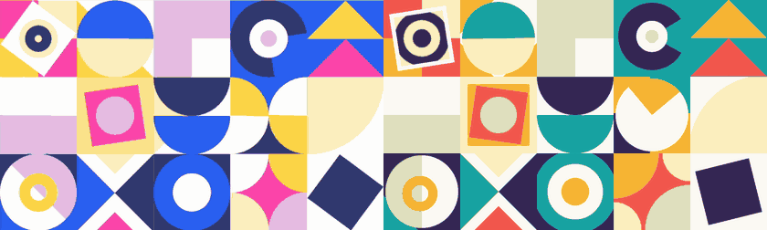
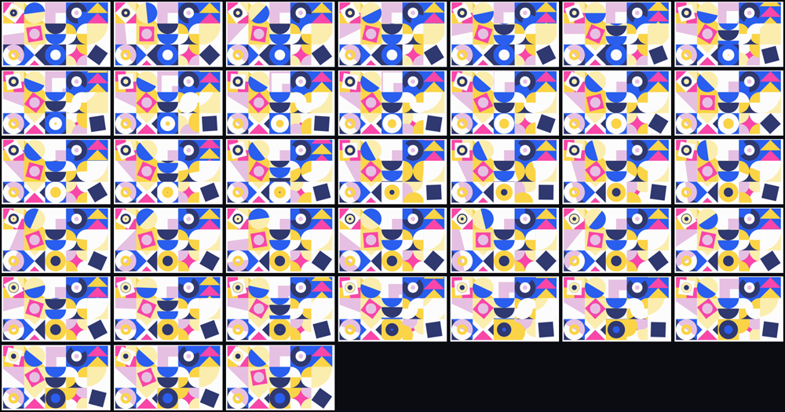

example · animated svg
Fifteen tiles that spin, scroll and ripple on one shared beat. Recreated from a 2.28 second screen recording: same shapes, same motion, new palette.
rendering in your browser right now · 14 KB of vector · zero JavaScript

prefers-reduced-motionone clip, phase-aligned, so the beats land together

Original animation from SVGator’s website-animation examples — all credit to the original creator. Captured as a screen recording; nothing was traced or copied.
a still frame shows every shape and no timing — this is the part you cannot eyeball
| Grid | 5 × 3 tiles of 267 px, inset at (18, 9) — the artwork is not flush to the frame. Found from the strongest vertical/horizontal edges. The first guess (flush 277 px tiles) was wrong, and made neighbouring tiles bleed into each other. |
|---|---|
| Beat | 0.75 s. Burst peaks at 0.317 / 1.067 / 1.817 s, agreeing to ±0.02 s across three independent tiles. |
| Character | Short eased ticks, then a hold — not constant velocity. |
| Easing | Peak angular speed is ~3.6× the mean — too sharp for a stock ease-in-out. cubic-bezier(.83,0,.17,1). |
| Cadence | Most tiles tick every beat; the half-plane, pie wedge and L-morph tick every second beat. |
| Stagger | ~41 ms top-to-bottom, applied as a per-row animation-delay. |
| Loop | 3.0 s = 4 beats — the ripple needs four beats to cycle its four colours. |
all 38 curated keyframes, in order, unedited

These are the only thing that costs image tokens (~300–400 each). The dense motion-energy curve that produced the timing above is pure arithmetic — effectively free. The numbers tell you when; these frames tell you what.
why motiscope hands perception to the model instead of guessing
motiscope’s whole-frame readout says
dominant easing: linear. That is the average across fifteen
tiles moving out of phase. Per tile, the angular velocity decelerates to near zero and ramps again:
a hard ease-in-out. Taking the one-line summary at face value would have produced a lifeless,
constant-speed grid. The report gives you the timing; you read the frames and the per-segment curve.
the recreation was rendered back to video and re-measured with the same code
source r1c2 burst peaks=[0.317, 1.067, 1.817] intervals=[0.75, 0.75] recreation r1c2 burst peaks=[0.433, 1.183, 1.933] intervals=[0.75, 0.75]
Same beat. The 0.116 s offset is phase — the recording starts mid-loop — and the side-by-side above is shifted by exactly that much so the two play in step.
every tile a different motif, all on one clock
| col 0 | col 1 | col 2 | col 3 | col 4 | |
|---|---|---|---|---|---|
| row 0 | rocking square + ripple target | half-disc rotating in a circle | L collapses / square blooms | pac-man, −90° per beat | triangle conveyor, scrolls up |
| row 1 | rotating half-plane | rocking square + circle | dome conveyor, scrolls down | pie wedge, +180° per 2 beats | quarter-disc scaling |
| row 2 | circle + rotating half + ring | four triangles pulsing | expanding ripple rings | four corner discs → 4-point star | rocking square |
The ripple is four discs growing 0→1 across the loop, phase-offset by one beat each, over a background whose colour steps in lock-step with whichever disc has just wrapped — so the wrap is invisible and the colours appear to march outward forever.
the timing transfers; the artwork doesn’t have to
| Source | Here |
|---|---|
#FCFCFC white | #FBF8F1 paper |
#295EEF blue | #17A2A2 teal |
#2F386F navy | #37244F plum |
#E6C0E2 lilac | #BFDCC6 sage |
#FBEDAE cream | #FBE3B8 sand |
#FBD346 yellow | #F5B335 amber |
#F946A8 pink | #F2584B coral |
honest examples teach more than perfect ones
both from one root cause, and one of them only hurt the users who could least afford it
An element with a positive
animation-delay renders un-transformed until its animation starts.
t=0, so every ripple ring drew at full radius and the topmost disc swallowed its tile. Fixed with animation-fill-mode: both.prefers-reduced-motion fallback used animation: none, which drops all transforms — the same collapse, permanently, for exactly the people who turn motion off. It now freezes on a real frame of the loop (animation-play-state: paused with a shared --t offset).the whole chain, from clip to SVG
motiscope analyze ambient_loop.mov --preset detailed # -> report.md + curated frames python3 generate.py > ambient-loop.svg # the build script, verbatim
{kind=link}